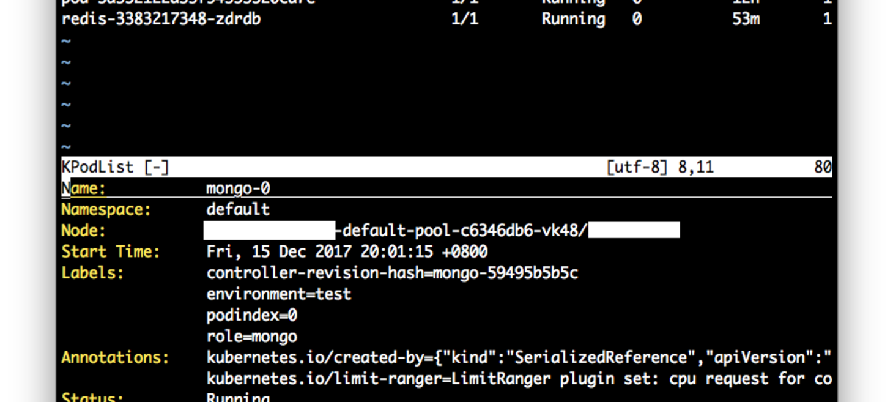

Hello World
CodeTengu Weekly 碼天狗週刊
CodeTengu Weekly 會在 GMT+8 時區的每個禮拜一 AM 10:00 出刊，每週會由三位 curator 負責當期的內容，每個 curator 有各自擅長的領域，如果你在這一期沒有看到感興趣的東西，可能下一期就有了。你也可以瀏覽一下前幾期的內容。
目前的 curator 陣容：
- @vinta - I failed the Turing Test - 科幻迷，最近在讀 Wool
- @saiday - Imnotyourson - 電量給我這種人用就是一種浪費
- @tzangms - Oceanic / 人生海海 - 靠, 買比特幣了啊!!!
- @fukuball - ImFukuball - 有新工作了，但歡迎直接挖角
- @mingderwang - Ethereum enthusiast
- @kako0507 - 熱愛嘗試新事物的前端工程師
- @chiahsien - 徵有經驗的 iOS 工程師，快來 Twitter 私訊我
- @uranusjr - Smaller Things - 我要成為錯字王
- @kkdai - 態度萬歲 - Learning Deeply....
- @yhsiang
- @johnlinvc - 挑戰自動化家中電器
- @drumrick - 歡迎加入台灣 Kaggle 交流區
- @wancw
你也可以關注我們的 Facebook、Twitter、GitHub 或 Open Source 專案，有很多 weekly 看不到的內容。有任何建議也歡迎來 Gitter 聊聊。
 @chiahsien
@chiahsien
為何 Git-Flow 可能不適合你
我發現每隔一段時間就會有人討論 Git-Flow 的優缺點或是怎樣才是好的 Git 工作流程，然後就會有人跳出來說「我們也是用 Git-Flow，可是我覺得沒有很好用」，每次看到這樣的留言我腦海裡都會冒出一句「不好用就不要用啊！」
我也時常跟朋友講說不一定要用 Git-Flow，後來想說乾脆寫一篇文章來記錄我的論點算了，所以就有這篇部落格文章的產生了：）
2017 best resources for advance iOS developers
一年過去，新的一年又來到了，有沒有覺得又浪費了一年啊（大誤）。如果你的新年希望是要奮發向上吸收新知的話，這篇文章很適合你，裡頭滿滿的好文連結，還依據不同主題分類了，整個看完大概可以撐到農曆過年吧！
CAEmitterLayer粒子发射器的神奇效果
最近工作上有個需求是點擊某個按鈕之後要出現類似冒泡泡的動畫效果，所以就不小心找到了這篇文章，才知道原來有 CAEmitterLayer 這種東西可以用，真的頗酷！另外也發現了一個頗有趣的動畫函式庫，順便分享給各位朋友。
View-state driven applications
本文作者認為在目前常見的 MVC 架構中，都刻意忽略了 View-State 這一塊，只把它當作過渡的產物，沒有好好思考過該把它放在哪裡。作者覺得 View-State 應該要擺在 Model 裏頭，並在文中舉了一個支援時光旅行的 app 為例，說明這樣做帶來的好處。
看完這篇文章後，有空的話可以繼續看 Redux 跟 Finite State Machine，或許能碰撞出更多有趣的想法。
Carbon
想要貼程式碼到部落格或是網路論壇上，可是對方卻沒有支援程式碼輸入的功能的話該怎麼辦呢？你可以考慮使用 GitHubGist，或者是把程式碼轉成圖片分享出去。這個服務能幫你轉成圖片，而且還有不少設定可以調整誒～
Color themes for Xcode
身為一個 iOS 工程師，整天都得盯著 Xcode 開發程式，當然要把它調得順眼一點。這個 repo 收集了許多 Xcode 的佈景主題，並且還附上了許多預覽圖，讓人可以快速找到自己喜歡的主題。
 @kkdai
@kkdai

超好用的 Kubernetes Console tool - c9s/Vikube.vim
Kubernetes 相當好用，但是要維運的時候最痛苦的事情，就是要打 kubectl
雖然我超愛 Golang ，而且其實我基本的 IDE 都是使用 VSCode ，但是我一定要跟各位好好推薦這個好工具． Vikube.vim
不論你透過 alias 設定成 kc 甚至是 k 還是得要記憶一堆指令 ex: kubectl get pod
其實就算你不是 vim 的愛用者 (畢竟學習曲線太高了) 我還是很推薦你使用這個工具．
:VikubeContextList可以開啟你所有連接過的 K8S 集群，透過s來切換你的集群．:VikubeNodeList可以開啟所有的節點清單，l可以看到 結點上面的 logs, 可以幫助你除錯（如果有問題):VikubePodList可以開啟 pod 清單，當然也可以透過l來看 POD 是否有出現問題．:VikubeTop可以開啟 top 來看各個 POD 的使用量
真的很好用... 再也不用擔心打 kubectl 或是忘記相關指令了 :p
Golang Internals Part 2: Nice benefits of named return values
"named return values" 是在你的 function 事先把回傳變數先命名好 ex: func foo() (bar string)
這篇文章告訴你，這樣做在 compiler code 上面會有什麼差異． 並且可以獲得更小的 function size 並且更有效率..
很值得好好閱讀.
dotConferences talks
https://www.dotconferences.com/conference/dotgo-2017
11 月剛剛在歐洲結束的的 dotGo conference 是相當盛大的 Golang 研討會， Google 與 Golang 社群有許多權威都有加入這場盛會． 在這場有有許多值得一聽的演講．
- Francesc 講 Machine Learning in Go
- Sam Boyer (dep 的主要開發者之一) 來講 Dep
- Sameer Ajmani (Go team manager ) 來講 Simulation real world in Go
推薦大家一定要看....
此外: dot Conferences 是歐洲盛大的技術研討會.. 還有很多... dotSwift dotAI dotJS ..都可以看看喔
Go Datastructure slices // Speaker Deck
相當好的投影片，講解 C 與 Go 的array 比較之處外，更有清楚講解 Golang 在 slice 跟 array 的差異之處。其架構與處理方式。
RFC: Apache Beam Go SDK design
這篇是由 Apache Beam (一個類似 Spark streaming 的資料串流處理的 framework) 所提出的 Golang SDK RFC (Request For Comments)． 別以為是一篇死板板的說明文件，裡面有說明了 Golang 的好處與作為 Streaming Data processing 的缺點與該如何設計． 相當值得一看...
@yhsiang
12 Mobile UX Design Trends For 2018
2018 行動裝置的使用者體驗趨勢，大部分圍繞著 iPhone X，像是沒有 Home 鍵或是全螢幕的體驗。
最後還有提到 AR 跟手機支付，有興趣的朋友可以仔細閱讀，有些類別作者還提供了延伸閱讀。
ReasonML: polymorphic variant types
之前我們提到了 ReasonML 正式推出第三版本，語法更貼近 JavaScript 開發者。
果然吸引了不少人開始學習，2ality 的作者也開始在部落格更新他學習 ReasonML 的過程。
此篇是帶你理解 ReasonML 中的 polymorphic variant type，蠻適合正在學習的 ReasonML 朋友們。
Introducing Hyperapp 1.0
喜歡 react, redux 的朋友，應該都會喜歡這套。
像 preact 是輕量化的 react， hyperapp 就是輕量化的 react + redux。